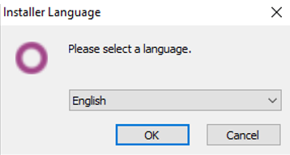
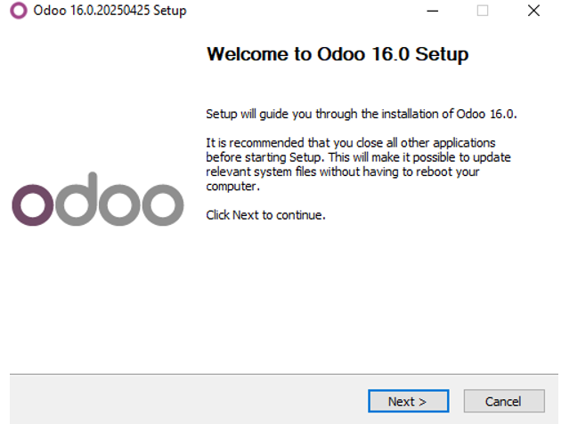
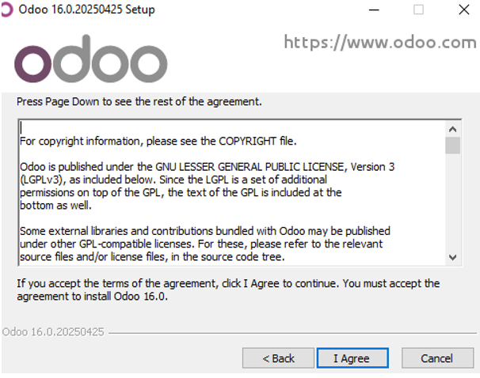
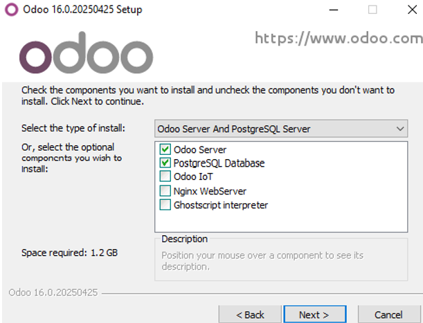
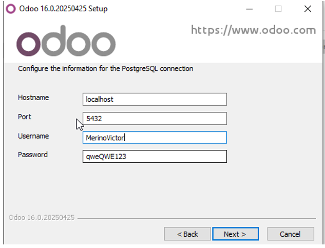
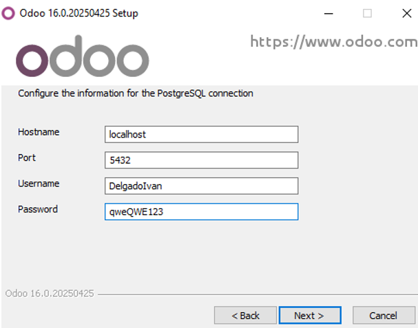
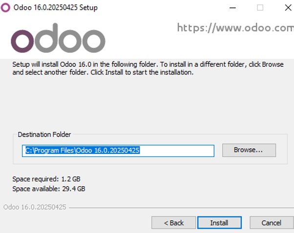
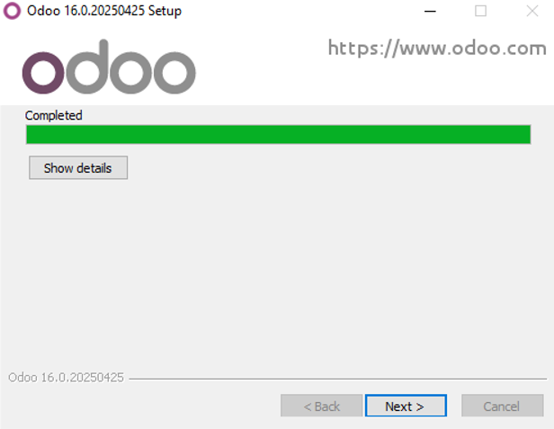
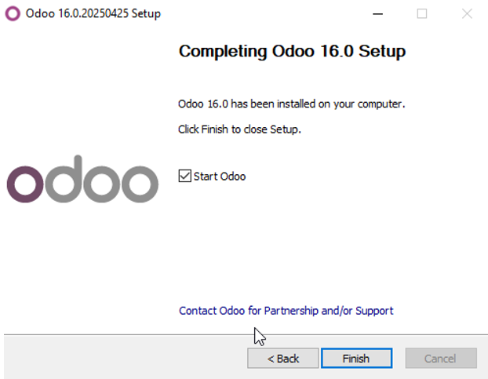

Le daremos a doble click al instalador y nos dejará escoger el idioma lo ideal es dejarlo en ingles si no esta en nuestro idioma
Aqui simplemente nos da la bienvenida, le daremos a "Next"
Aqui puedes leerte ( o no), los terminos de licencia, para continuar le daremos a "I Agree".
En este paso necesitaremos instalar unos servicios/programas basicos que son los que estan marcado en la imagen. Para seguir con la instalacion le daremos a "Next".
En este paso necesitaremos instalar unos servicios/programas basicos que son los que estan marcado en la imagen. Para seguir con la instalacion le daremos a "Next".
En este paso podemos decidir donde queremos que se guarden los archivos del programa, en este caso Odoo. Para continuar le daremos a "Install".
Aqui se ve que esta en el proceso de instalación.
Nos aparecerá este mensaje de que la instalación ha finalizado. Para cerrar le daremos a "Finish".
